Fun with Filters and Frequencies
Overview
Everything in this project came from one operation: 2D convolution. I first wrote convolution by hand and used it with finite difference and Gaussian filters to find edges. I then treated the Gaussian as a low pass filter, which let me split images into frequency bands. I used those bands for unsharp masking, hybrid images that change with viewing distance, and multiresolution blending with Gaussian and Laplacian stacks.
Convolutions from scratch
Convolution flips the kernel, slides it across the image, and takes a weighted sum at every position. I wrote two versions using only NumPy. Both versions first pad the image with zeros by k − 1 on every side, which gives a full convolution of size (H + kh − 1) × (W + kw − 1). For same mode, I keep the centered H × W window of the full result, starting at ((kh − 1) // 2, (kw − 1) // 2). I chose this offset because it is the same convention that scipy.signal.convolve2d uses. The four-loop version visits every output pixel and every kernel entry:
def conv2d_four_loops(image, kernel, mode="same"):
flipped = kernel[::-1, ::-1]
kh, kw = flipped.shape
padded, r0, c0, out_h, out_w = _pad_for(image, kernel, mode)
out = np.zeros((out_h, out_w))
for i in range(out_h):
for j in range(out_w):
total = 0.0
for u in range(kh):
for v in range(kw):
total += flipped[u, v] * padded[r0 + i + u, c0 + j + v]
out[i, j] = total
return out
The two-loop version replaces the inner two loops with a single NumPy operation: it multiplies the flipped kernel by the image window under it and sums the result.
def conv2d_two_loops(image, kernel, mode="same"):
flipped = kernel[::-1, ::-1]
kh, kw = flipped.shape
padded, r0, c0, out_h, out_w = _pad_for(image, kernel, mode)
out = np.zeros((out_h, out_w))
for i in range(out_h):
for j in range(out_w):
out[i, j] = np.sum(padded[r0 + i:r0 + i + kh, c0 + j:c0 + j + kw] * flipped)
return out
Correctness. To check my work, I compared both versions against convolve2d(..., boundary="fill", fillvalue=0) in both modes. I tested the 9 × 9 box filter, Dx = [1, −1], and Dy = [1, −1]T. The largest difference was 5.6 × 10−16 for the box filter, which comes from adding numbers in a different order, and exactly 0 for Dx and Dy. The difference kernels have an even length, so they also confirmed that my same-mode centering matched SciPy's.
Runtime. I timed each version on the 400 × 315 grayscale selfie with the 9 × 9 box filter:
| implementation | time | relative to scipy |
|---|---|---|
| four loops (pure Python) | 2.03 s | ~170× |
| two loops + NumPy window sum | 0.23 s | ~20× |
scipy.signal.convolve2d | 0.012 s | 1× |
Every Python loop iteration has overhead, so moving the 81 kernel entries into NumPy made my code about 9× faster. SciPy runs the entire loop in compiled C, which made it another 20× faster. The four-loop version performs H·W·kh·kw Python operations, so doubling the kernel width would make it roughly 4× slower.
Boundaries. Zero padding treats everything outside the photo as black. As a result, the box filter averaged dark pixels into the border, and Dx and Dy picked up a false edge along the frame. SciPy can pad with zeros as well, but it can also mirror the image at the border with symm or wrap it around with wrap. Mirroring avoided the dark rim, so I used boundary="symm" whenever I called SciPy in the rest of the project.
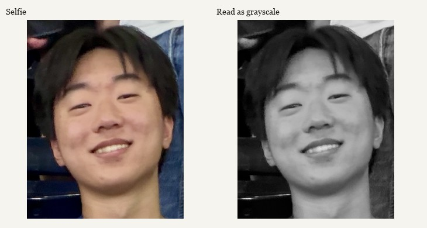
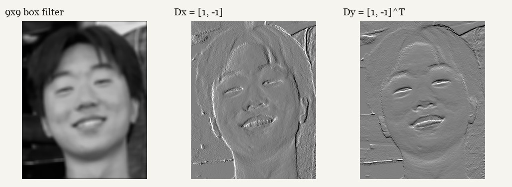
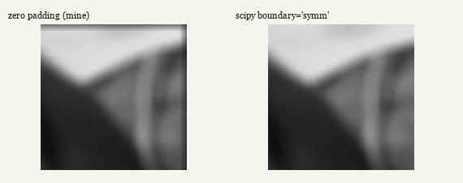
Finite difference operator
I convolved the cameraman with Dx and Dy to approximate the partial derivatives ∂I/∂x and ∂I/∂y. I then combined them into the gradient magnitude:
Before filtering, I noticed that the provided PNG had a thin white frame: seven rows along the top and a few columns on the sides. Its sharp step would have shown up as the strongest edge in the image, so I cropped it off first.
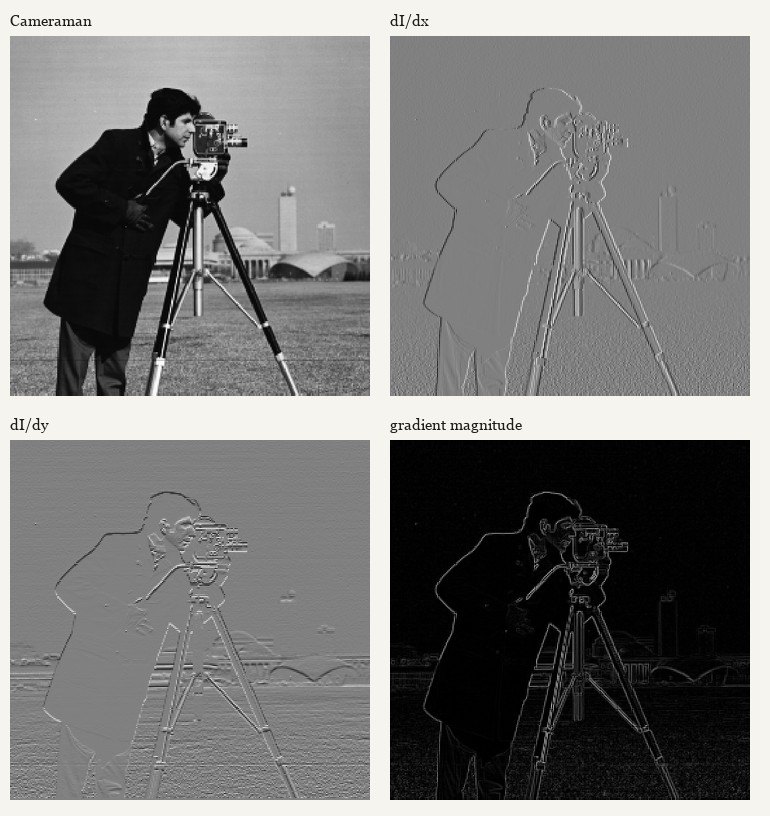
To make an edge image, I kept every pixel whose gradient magnitude was above a threshold. The hard part was the grass. A single-pixel difference amplifies noise, and the grass texture produced many small gradients that competed with the real edges.
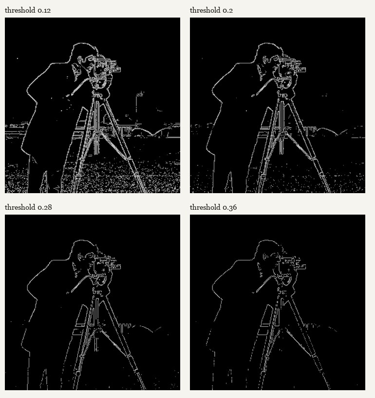
At 0.12, the grass was filled with speckles. At 0.2, the lower half was still noisy. At 0.28, almost all of the grass noise disappeared, while the coat, camera, and tripod legs stayed connected. At 0.36, the tripod legs and the outline of the camera began to break apart. I chose 0.28 as a compromise. I accepted losing most of the faint buildings in the background because they had lower contrast than the grass, and keeping them would have brought the noise back.
Derivative of Gaussian (DoG) filter
I built a 2D Gaussian by taking the outer product of cv2.getGaussianKernel(13, 2) with itself, which gave a 13 × 13 filter with σ = 2. I then blurred the cameraman with it and repeated Part 1.2 on the blurred image.
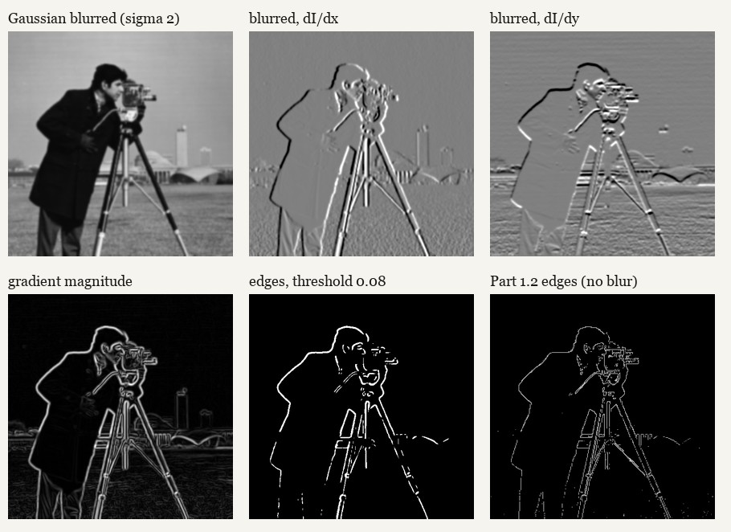
What changed. Blurring removed most of the grass noise before I took the derivative, which led to three improvements:
- The edges became thicker and smoother, and they formed continuous outlines instead of broken chains of pixels.
- The noise dropped enough that I could use a much lower threshold, 0.08 instead of 0.28. The lower threshold kept the faint tripod legs and the buildings on the horizon, and the grass still stayed clean.
- The magnitudes were smaller overall because the blur spread every edge across several pixels. The tradeoff was that small details, like the knobs on the camera, merged into blobs.
One convolution instead of two. Convolution is associative, so (I ∗ G) ∗ Dx = I ∗ (G ∗ Dx). I convolved G with Dx and Dy once to make the DoG filters, and then I applied each one directly to the image:
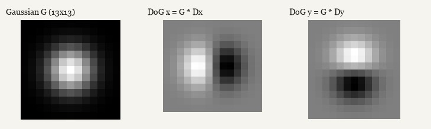
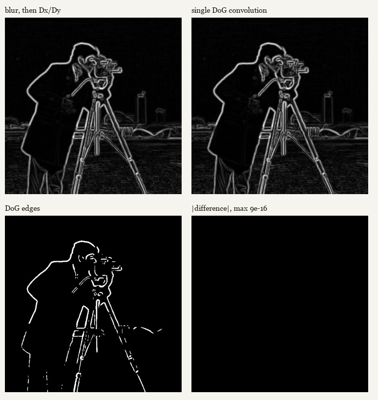
Both approaches produced the same result. The DoG approach is also cheaper to reuse because I only build the small 13 × 14 filter once, and the image needs just one pass per direction.
Bells & whistles: gradient orientation
I wanted to show which direction each edge faces, so I visualized orientation in HSV. Hue represents the direction of the gradient, value represents its strength, and saturation stays at 1. The assignment asked us not to use built-in angle functions like arctan2, so I built the hue directly from the unit gradient vector (c, s) = (gx, gy) / ‖g‖, where c = cos θ and s = sin θ. I computed three color channels from c and s:
These channels equal ½ + ½cos(θ − k·120°) for k = 0, 1, 2, but I never had to compute θ itself. As the direction goes around the circle, this color travels around the color wheel exactly once. I then converted it with rgb_to_hsv, which uses simple comparisons instead of trigonometry, to get a hue for each pixel. Finally, I rebuilt the image in HSV with that hue, full saturation, and the DoG gradient strength as the brightness.
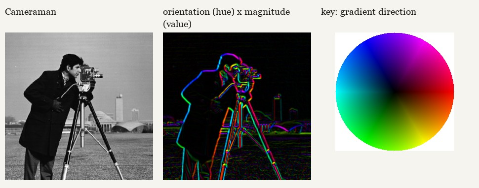
Image "sharpening"
A Gaussian G is a low pass filter: blurring with it keeps only the coarse structure of an image. Subtracting the blurred image from the original leaves the high frequencies, which are the edges and texture. An image looks sharper when its high frequencies are stronger, so I added α times more of them back. Because convolution is linear, this combines into a single filter called the unsharp mask:
Here, δ is the unit impulse. I built the kernel once with σ = 2 and a size of 13 × 13, and then applied it to each color channel in a single convolution. The kernel has a tall positive spike in the middle and a shallow negative bowl around it. At an edge, it makes the bright side brighter and the dark side darker.
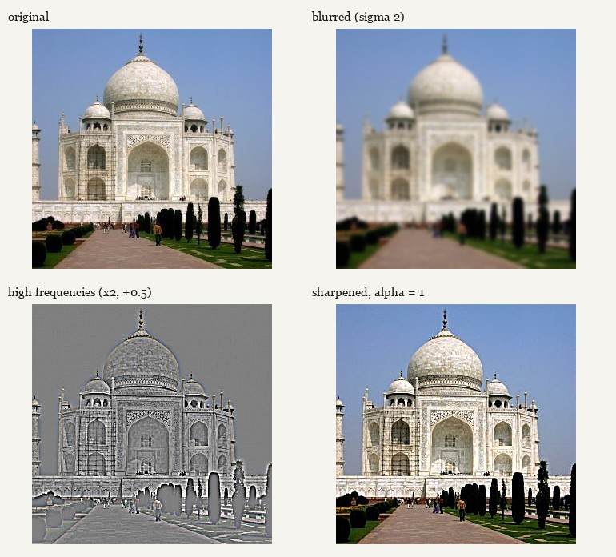
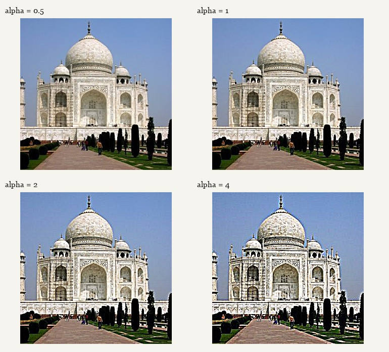
For my own example, I used a night photo of a mural. The photo came out soft because of the low light, which made it a good candidate for sharpening.
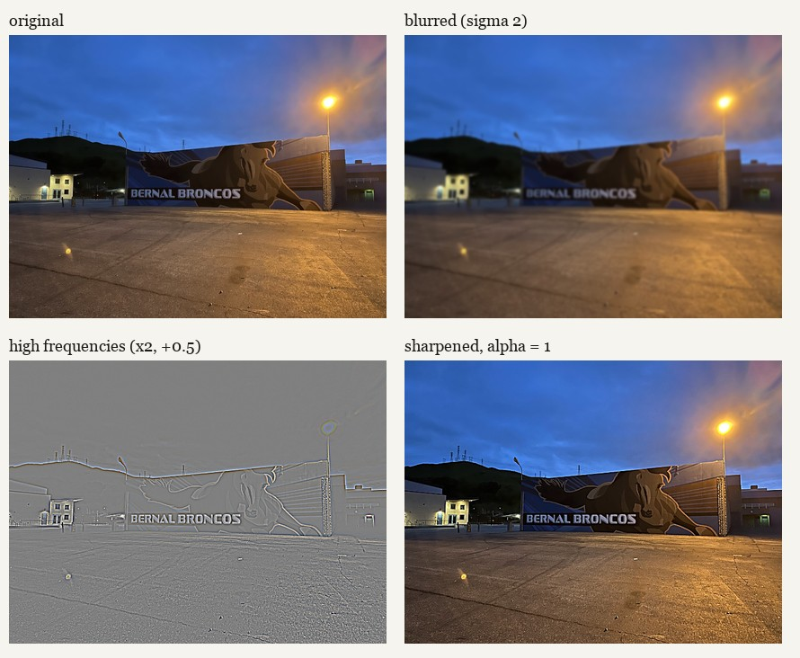
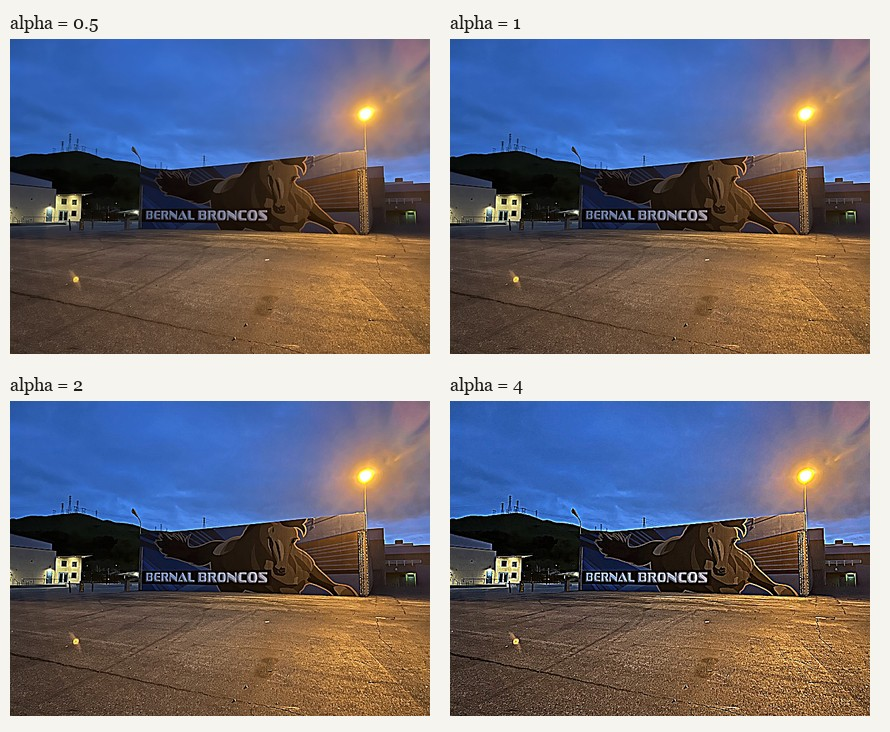
Evaluation: blur a sharp image, then sharpen it
To test whether sharpening can undo blur, I cropped a sharp photo of a building, blurred it with σ = 2, and then applied the unsharp mask with α = 2.
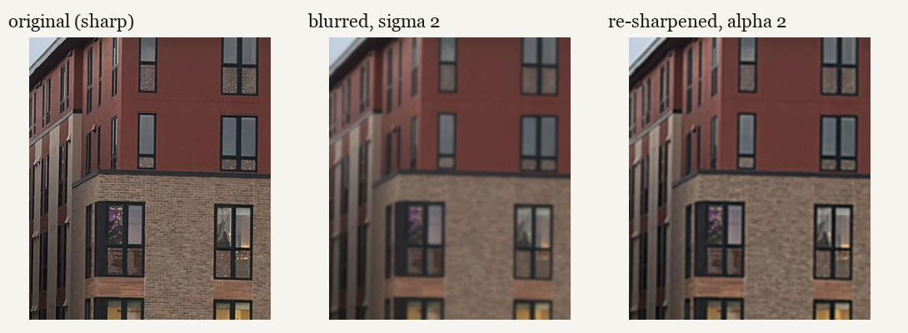
At first glance, the re-sharpened image looked much closer to the original, and its mean squared error dropped by about 40%. The window frames and floor lines were crisp again. However, the brick texture and the patterned screens behind the windows stayed smooth. Those details lived at frequencies that the Gaussian had almost completely removed. Unsharp masking can only amplify frequencies that still exist, and multiplying almost nothing by 1 + α still gives almost nothing. Sharpening also added thin bright and dark halos next to strong edges that were not in the original. This test showed me that sharpening makes edges look stronger, but it cannot bring back information that was lost.
Hybrid images
Following Oliva, Torralba, and Schyns, I made each hybrid image by adding the low frequencies of one image to the high frequencies of another:
Up close, the high frequencies dominate what we see. From far away, the eye can no longer pick out fine detail, so only the low pass image remains. To line up each pair, I used the provided starter code, which recenters, rescales, and rotates the images based on two points in each. The starter code asks you to click the points, but I passed in eye positions that I measured by hand so that the alignment would be the same every time I ran it. I also fixed the starter's rescale calls, which needed channel_axis=-1 in the current version of scikit-image. Without that fix, the function also rescaled the color channels. Finally, I cropped each aligned pair around the face.
A Gaussian with spatial σ has a frequency response with a standard deviation of 1/(2πσ) cycles per pixel, so I used that value as the cutoff for each filter. A larger σlow made the low pass image blurrier, and a smaller σhigh kept only the finest detail in the high pass image. I learned that the two cutoffs need some space between them. Otherwise, both images compete in the same band, and the result looks like a double exposure at every distance.
Favorite: bobblehead → Dad (full process)
Up close, this hybrid is a bobblehead. From far away, it becomes Dad, using his smiling photo from Project 0. The bobblehead supplied the high frequencies: the painted eyes, the eye black, the cap logo, and the fabric backdrop. Dad's photo supplied the low frequencies: his face shape, skin tone, and lighting. Both faces looked straight at the camera, so the alignment only needed a small change in scale and almost no rotation.
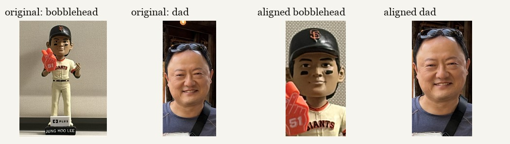
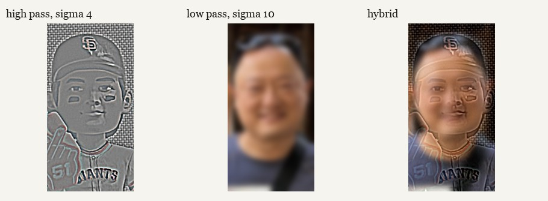
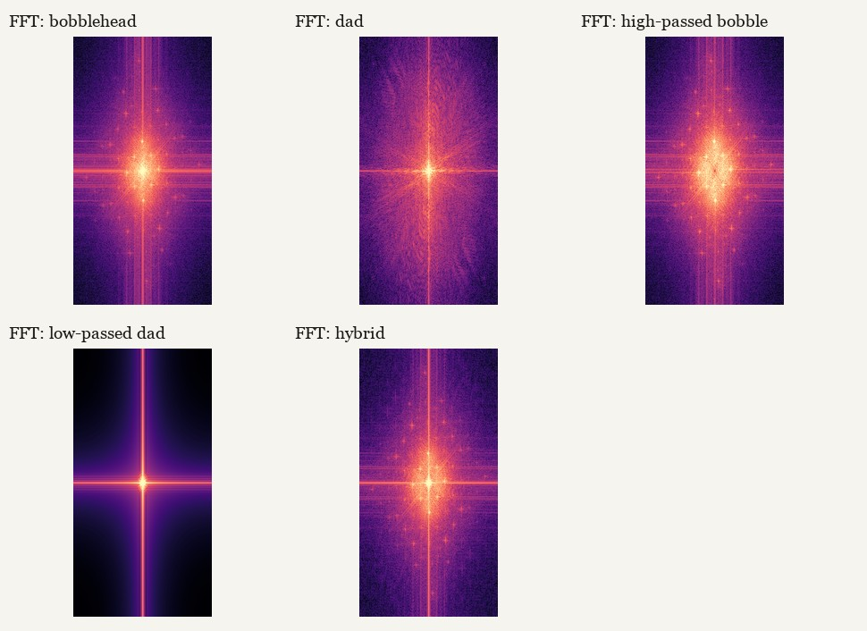
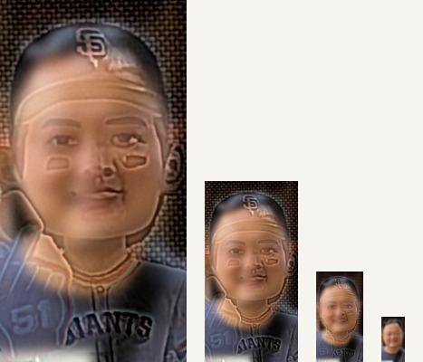
Choosing the cutoffs. To pick each σ, I swept it while holding the other one fixed:
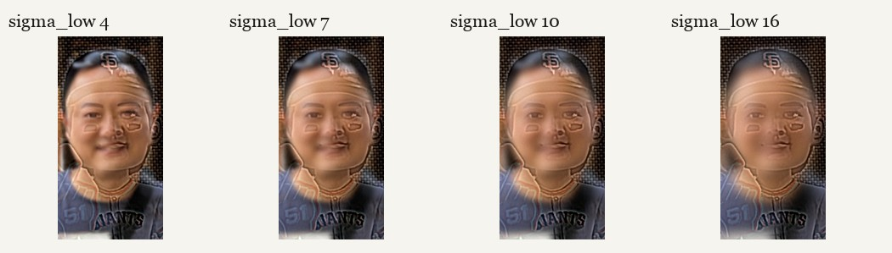
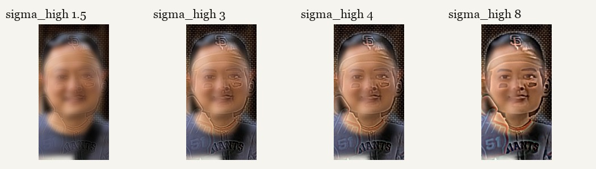
Derek + Nutmeg
Nutmeg provided the high frequencies, mostly whiskers and fur, and Derek provided the low frequencies. The starter code rotated the cat about 30° to line up its eyes with Derek's. I used σhigh = 7 and σlow = 9. I needed a larger σhigh than in my favorite example because much of the fur's detail sits in the middle frequencies, and I wanted Nutmeg's face to stay clear up close.
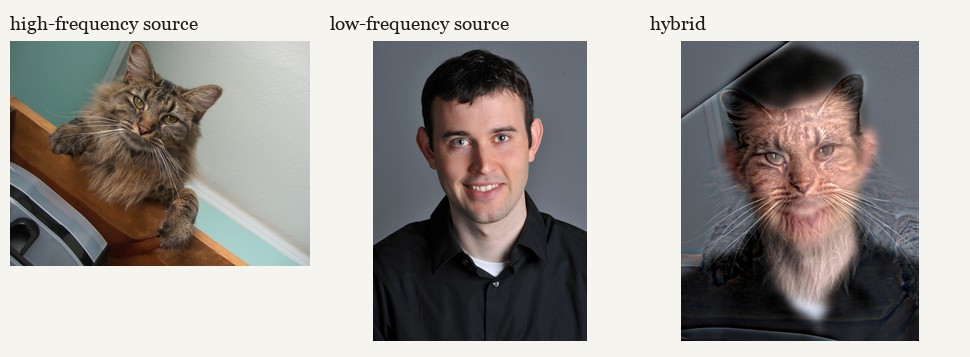
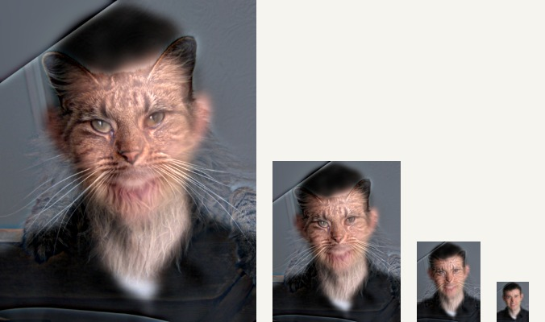
Dad → me (change over time)
For my third hybrid, Dad supplied the high frequencies and the selfie supplied the low frequencies, with σhigh = 3 and σlow = 8. My head was tilted about 12° in the selfie, so the starter code rotated his photo to match. The selfie was already a little soft, which worked well for the low pass side because the filter throws that fine detail away anyway. His photo had plenty of fine detail, like his smile lines, the wrinkles around his eyes, and his sunglasses, to carry the image up close. The result is a generational hybrid: Dad up close, and me from across the room.
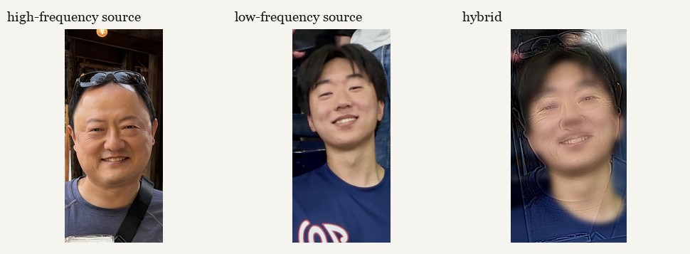
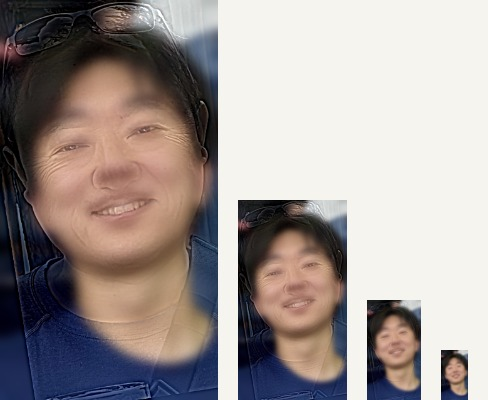
Here are the full-size results. Try looking at them up close and then stepping back from the screen:
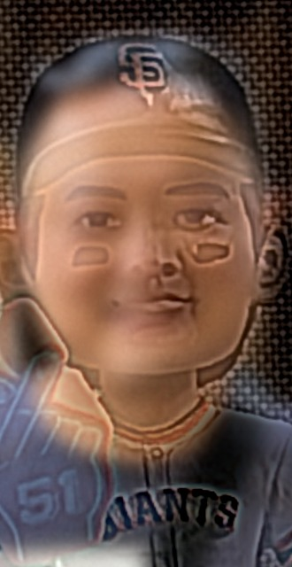
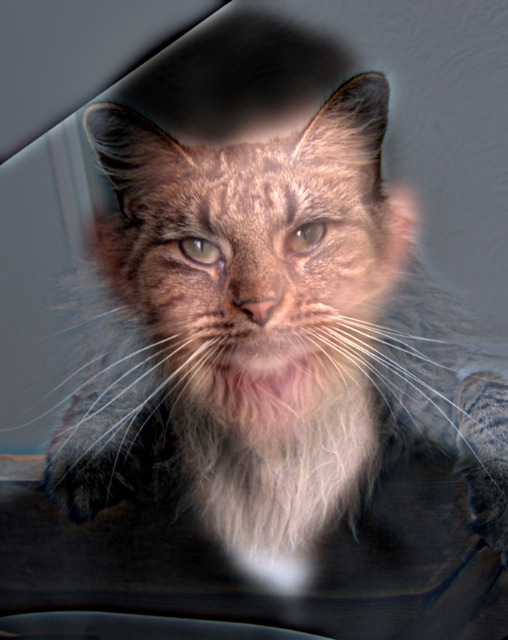
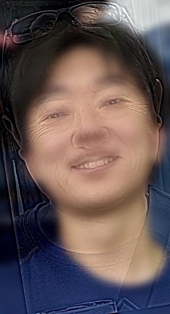
Bells & whistles: using color
To find out where color helps the most, I rebuilt Derek + Nutmeg with each component in either color or grayscale:
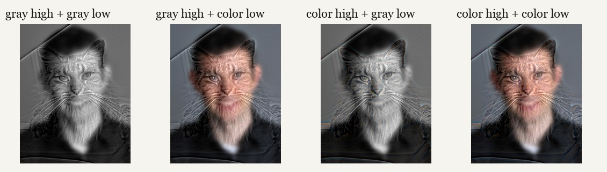
Color worked best in the low frequency component. Our eyes see color mostly at low resolution, so color naturally belongs with the smooth, low frequency layer. With a color low pass image, Derek's skin tone made the far-away view much stronger, and the gray whiskers still showed up clearly up close. Color in the high frequency component did very little. Nutmeg's brown fur was fairly uniform, so high-pass filtering removed most of its color, and the faint colored edges that remained were hard to see. Using color in both components looked almost the same as using it in the low component alone. In the end, I preferred a color low pass image with either a color or gray high pass image. The gray version was slightly cleaner because it avoided faint colored fringes.
Gaussian and Laplacian stacks
A stack is like a pyramid without downsampling: every level stays at full resolution. I implemented both stacks from scratch. Each level of the Gaussian stack blurs the previous level, and I doubled σ at every step, from 2 to 4, 8, 16, and 32, to imitate a pyramid that halves its resolution. Each Laplacian level is the difference between two neighboring Gaussian levels, which isolates one band of frequencies. For the last Laplacian level, I kept the blurriest Gaussian level itself, so adding up the stack gave back the original image. The largest reconstruction error was 5.6 × 10−17.
def gaussian_stack(image, levels, sigma):
stack = [image]
for i in range(levels - 1):
stack.append(blur(stack[-1], sigma * 2 ** i))
return stack
def laplacian_stack(image, levels, sigma):
g = gaussian_stack(image, levels, sigma)
return [g[i] - g[i + 1] for i in range(levels - 1)] + [g[-1]]
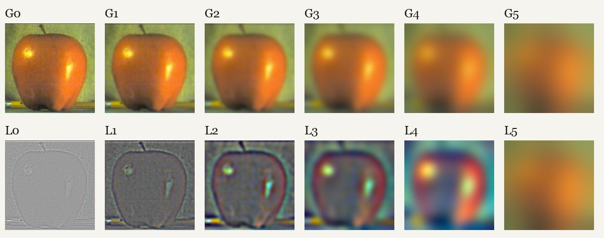
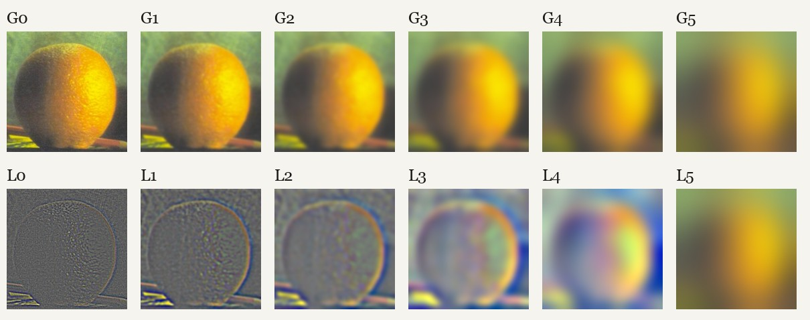
I then recreated Figure 3.42 from Szeliski. Each row weights the apple and orange Laplacian levels by the matching level of the mask's Gaussian stack and adds them together. The bottom row shows the full masked images and the final oraple:
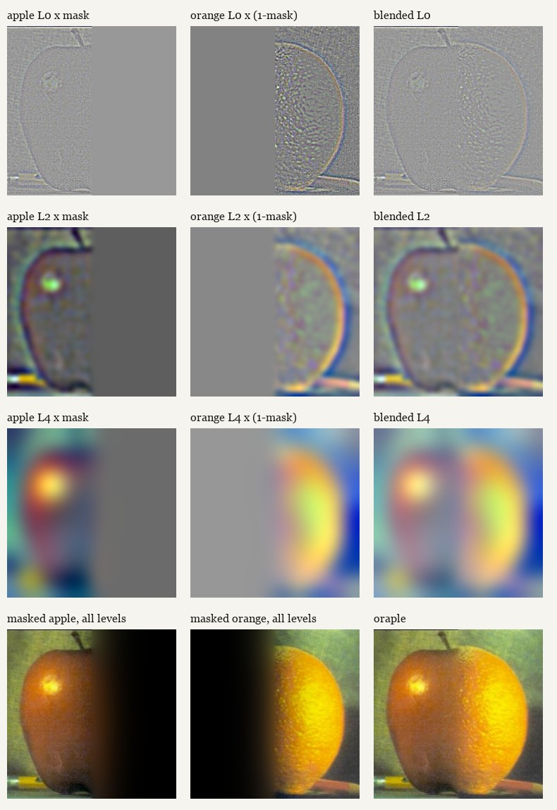
Multiresolution blending (the oraple)
To blend two images, I combined their Laplacian levels one at a time, weighting each pair by the matching level of the mask's Gaussian stack. I then added all the levels together:
With stacks, a sharp step mask would leave a visible seam because the images are never downsampled and upsampled. Building a Gaussian stack for the mask solved this problem. At the fine levels, the mask is still almost a sharp step, so small details switch cleanly without ghosting. At the coarse levels, the mask is very wide, so large areas of color fade into each other gradually.
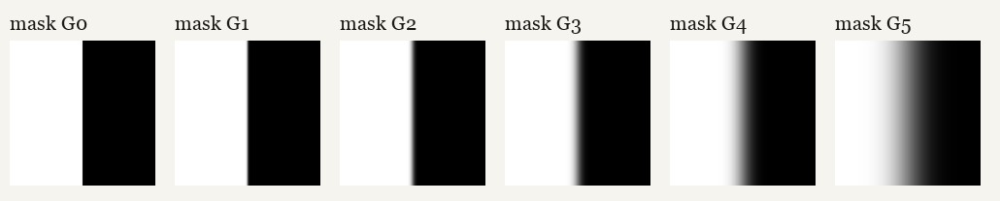
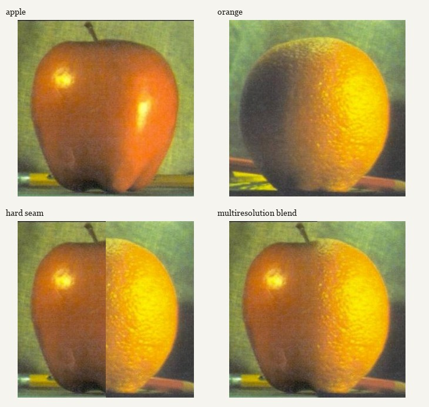
Vertical seam: Dad | bobblehead
I warped the bobblehead photo onto Dad's photo with a similarity transform that matched their eyes. I then cropped both images and blended them with a vertical step mask using 7 levels.
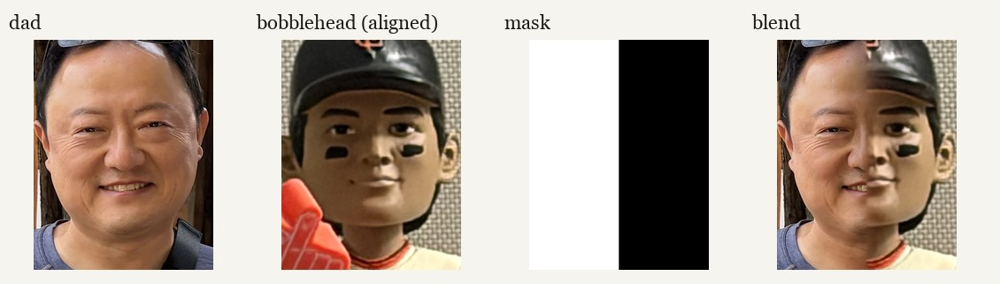
Irregular mask: my face on a bobblehead
This is my favorite result. I warped the selfie onto the bobblehead by matching our eyes, which also straightened out my tilted head. I then used an elliptical mask that covered my eyebrows, eyes, nose, and mouth. I lightly blurred the mask with σ = 3 before blending, and I used 6 levels with σ = 1.5.
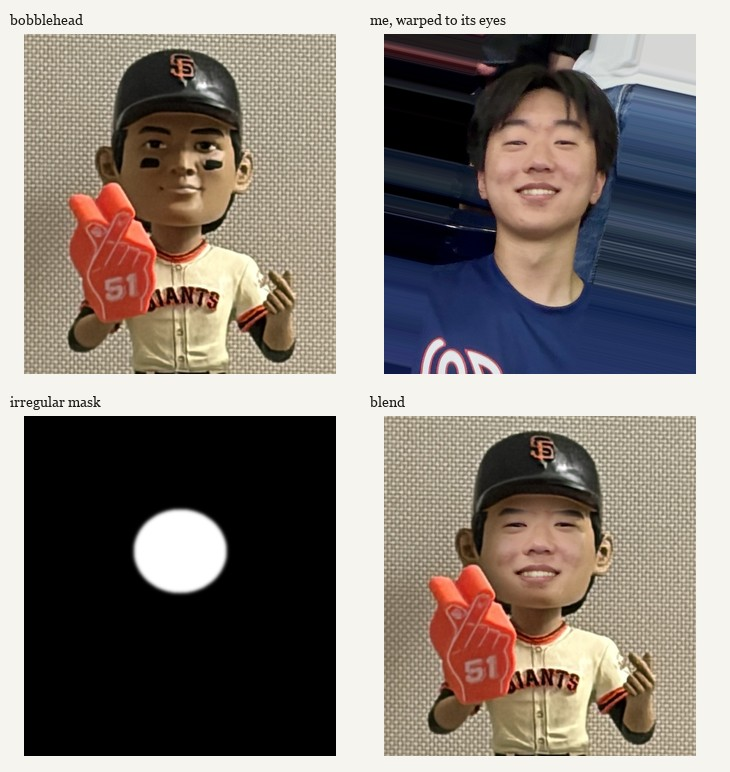
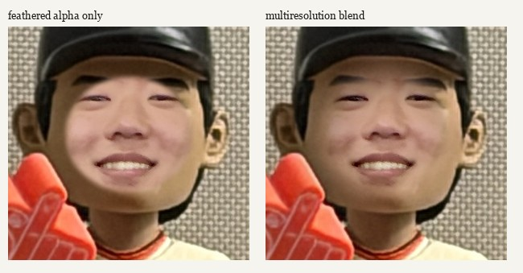
Similar to Figure 10 in Burt and Adelson, the figure below shows the Laplacian stack of both masked inputs and the combined result for this blend:
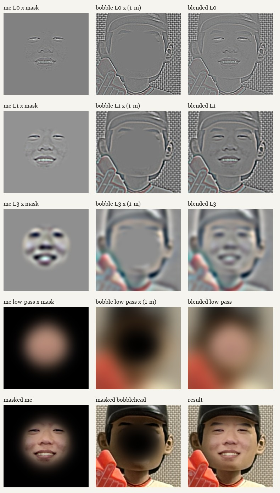
Irregular mask: sky swap
I also wanted to try a mask that follows the outline of real objects, so I replaced the overcast sky above two buildings with the dusk sky from my night photo in Part 2.1. To build the mask, I selected bright, bluish pixels and kept only the regions connected to the top of the image. That way, windows that reflected the sky were left alone. I then filled in the small gaps with a morphological closing.
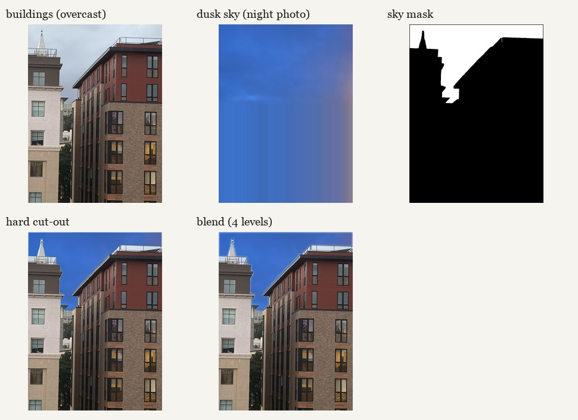
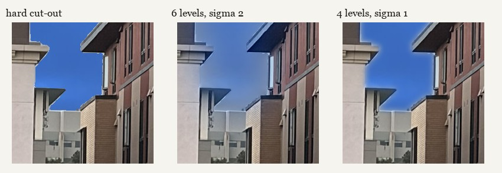
This blend was the opposite of the oraple. The apple and orange needed a wide transition to hide a seam through similar textures. Here, the boundary was a real, sharp edge, so a deep stack smeared color across it. A shallower stack gave a narrower transition that still removed the fringe.
Bells & whistles: color
I ran all of the blends above in full color. To do this, I built a Laplacian stack for each RGB channel and applied the same mask stack to all three. Color made the effect much stronger. In grayscale, the apple and orange had similar brightness, so the oraple was mostly a change in texture. In color, the shift from red to orange was the most noticeable part of the seam, and the coarse levels of the stack were what smoothed it out. Not only was color essential for the bobblehead face swap, which looked convincing because of the color transfer at the low levels, it was also the whole point of the sky swap.
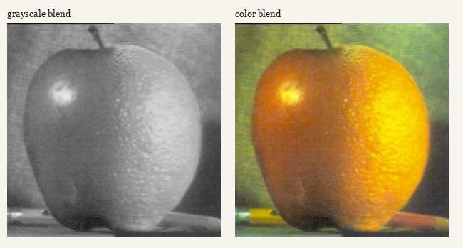
What I learned
The most important thing I learned was to think of an image as a sum of frequency bands. Once I saw images this way, every part of the project made more sense. Sharpening added more of the top band. A hybrid image joined the bottom band of one picture to the top band of another. Blending stitched each band together separately, with a seam as wide as that band's scale. All of it came from one small operation: a Gaussian blur, applied through convolution. I also didn't expect σ to matter as much as it did. It was the main parameter in every section, and I spent more time choosing it than writing code. This project taught me that the math is only half the work, and the other half is tuning it until the result looks right to the human eye.